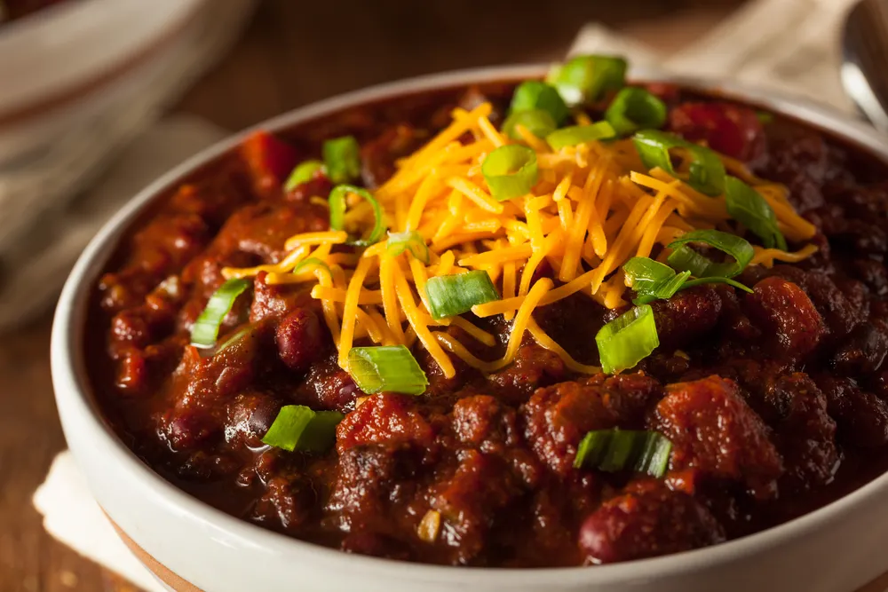
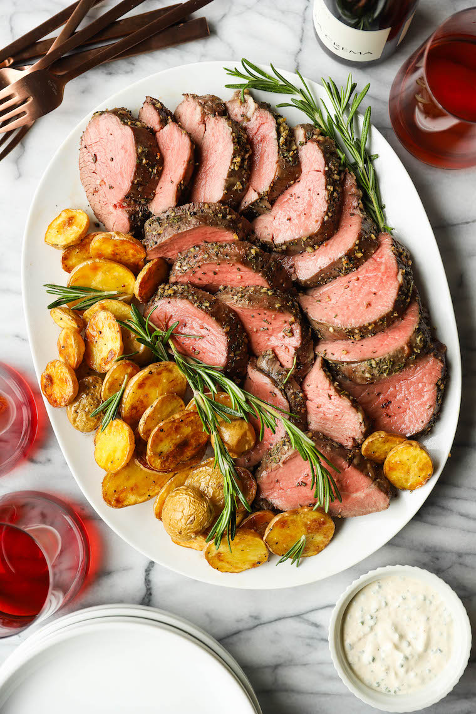
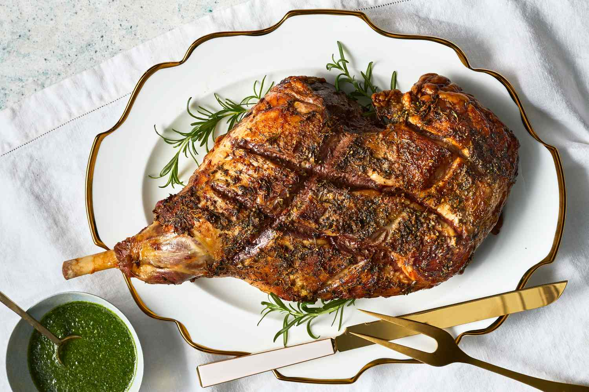
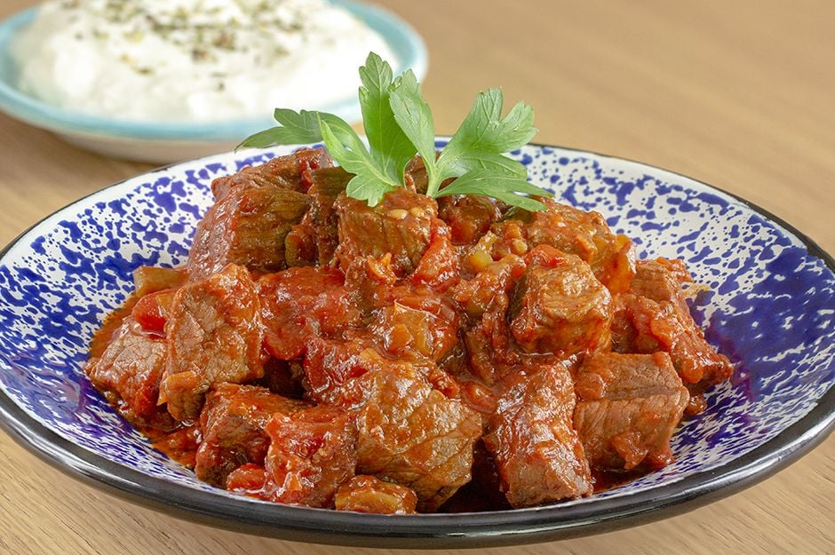
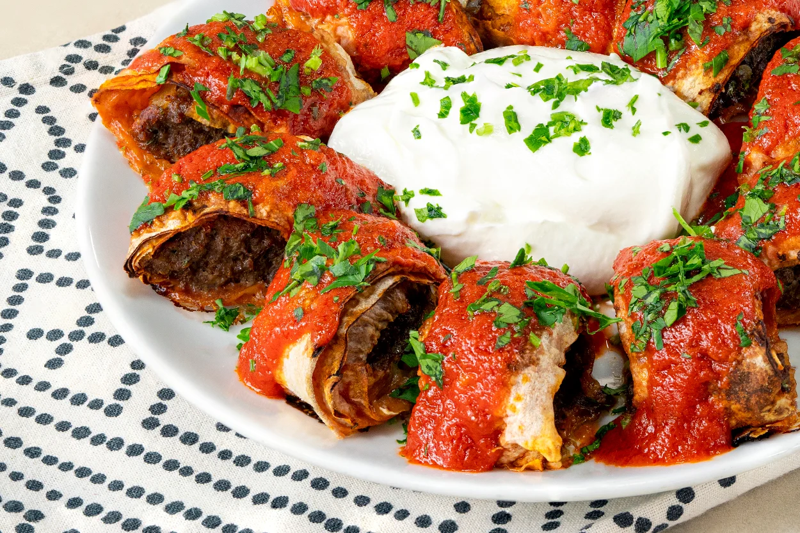

Spicy Beef and Bean Chili
This spicy beef and bean chili recipe is perfect for warming up on a cold day. Packed with flavor and hearty
ingredients, it's sure to become a family favorite!
-
Preparation time
- Total: Approximately 40 minutes
- Preparation: 10 minutes
- Cooking: 30 minutes
-
Ingredients
- 1 lb ground beef
- 1 onion, diced
- 2 cloves garlic, minced
- 1 bell pepper, diced
- 1 can (15 oz) kidney beans, drained and rinsed
- 1 can (15 oz) black beans, drained and rinsed
- 1 can (14.5 oz) diced tomatoes
- 1 cup beef broth
- 2 tablespoons chili powder
- 1 teaspoon cumin
- Salt and pepper to taste
- Optional toppings: shredded cheese, sour cream, diced avocado, chopped cilantro
-
Instructions
-
In a large pot or Dutch oven, cook the ground beef over medium heat until browned. Drain excess fat if
necessary.
-
Add the diced onion, minced garlic, and diced bell pepper to the pot with the ground beef. Cook, stirring
occasionally, until vegetables are softened, about 5 minutes.
-
Stir in the drained and rinsed kidney beans, black beans, diced tomatoes, beef broth,
chili powder, cumin, salt, and pepper. Bring the mixture to a simmer.
-
Reduce heat to low and let the chili simmer, uncovered, for about 20-25 minutes, stirring occasionally, until flavors are well combined and chili has thickened slightly.
-
Taste and adjust seasoning as needed. If the chili is too thick, you can add more beef broth to reach your desired consistency.
-
Serve the spicy beef and bean chili hot, garnished with your favorite toppings such as shredded cheese, sour cream, diced avocado, and chopped cilantro.
Nutrition
The table below shows nutritional values per serving.
| Calories |
310 kcal |
| Carbohydrates |
22g |
| Protein |
24g |
| Fat |
14g |

Rosemary Garlic Roast Beef
This rosemary garlic roast beef recipe is a classic dish perfect for a special dinner. The aroma of rosemary and garlic
infuses the meat, making every bite flavorful and tender.
-
Preparation time
- Total: Approximately 2 hours
- Preparation: 15 minutes
- Cooking: 1 hour 45 minutes
-
Ingredients
- 3 lbs beef sirloin roast
- 4 cloves garlic, minced
- 2 tablespoons fresh rosemary, chopped
- 2 tablespoons olive oil
- 1 teaspoon salt
- 1/2 teaspoon black pepper
- 1/2 cup beef broth
-
Instructions
-
Preheat your oven to 375°F (190°C).
-
In a small bowl, mix together the minced garlic, chopped rosemary, olive oil, salt, and black pepper.
-
Rub the garlic and rosemary mixture all over the beef roast, ensuring it's evenly coated.
-
Place the roast in a roasting pan or on a rack set in a baking dish. Pour the beef broth into the bottom of the pan.
-
Roast the beef in the preheated oven for about 1 hour and 45 minutes, or until a meat thermometer inserted into the thickest part registers your desired doneness (for medium-rare, aim for 135°F or 57°C).
-
Once done, remove the roast from the oven and let it rest for 15 minutes before slicing.
-
Serve the rosemary garlic roast beef slices with your favorite sides, such as roasted potatoes and steamed vegetables.
Nutrition
The table below shows nutritional values per serving.
| Calories |
350 kcal |
| Carbohydrates |
1g |
| Protein |
45g |
| Fat |
17g |

Herb-Crusted Roast Lamb
This herb-crusted roast lamb recipe is perfect for a special occasion. Packed with aromatic herbs and spices, it's sure to impress your guests!
-
Preparation time
- Total: Approximately 1 hour 30 minutes
- Preparation: 20 minutes
- Cooking: 1 hour 10 minutes
-
Ingredients
- 1 leg of lamb (about 4 lbs)
- 3 cloves garlic, minced
- 2 tablespoons fresh rosemary, chopped
- 2 tablespoons fresh thyme, chopped
- 2 tablespoons Dijon mustard
- 2 tablespoons olive oil
- Salt and pepper to taste
- 1 cup red wine
- 1 cup beef broth
-
Instructions
-
Preheat your oven to 375°F (190°C).
-
In a small bowl, combine the minced garlic, chopped rosemary, chopped thyme, Dijon mustard, and olive oil. Mix well to form a paste.
-
Season the leg of lamb generously with salt and pepper. Rub the herb mixture all over the lamb, pressing it into the meat.
-
Place the lamb in a roasting pan. Pour the red wine and beef broth into the bottom of the pan.
-
Roast the lamb in the preheated oven for about 1 hour and 10 minutes, or until the internal temperature reaches 135°F (57°C) for medium-rare. Baste the lamb occasionally with the pan juices.
-
Remove the lamb from the oven and let it rest for 15 minutes before carving. Serve with the pan juices.
Nutrition
The table below shows nutritional values per serving.
| Calories |
350 kcal |
| Carbohydrates |
3g |
| Protein |
40g |
| Fat |
18g |

Beef Sauté
This beef sauté recipe is a quick and delicious option for a weeknight dinner. Tender beef strips cooked with vegetables in a savory sauce make for a satisfying meal.
-
Preparation time
- Total: Approximately 25 minutes
- Preparation: 10 minutes
- Cooking: 15 minutes
-
Ingredients
- 1 lb beef sirloin, thinly sliced
- 2 tablespoons olive oil
- 1 onion, thinly sliced
- 1 bell pepper, thinly sliced
- 2 cloves garlic, minced
- 1 cup mushrooms, sliced
- 1 cup cherry tomatoes, halved
- 2 tablespoons soy sauce
- 1 tablespoon Worcestershire sauce
- Salt and pepper to taste
- Fresh parsley, chopped (for garnish)
-
Instructions
-
Heat 1 tablespoon of olive oil in a large skillet over medium-high heat. Add the beef strips and cook until browned, about 4-5 minutes. Remove the beef from the skillet and set aside.
-
In the same skillet, add the remaining tablespoon of olive oil. Add the sliced onion, bell pepper, and garlic. Cook, stirring frequently, until the vegetables are softened, about 5 minutes.
-
Add the mushrooms and cherry tomatoes to the skillet. Cook for another 3-4 minutes, until the mushrooms are tender.
-
Return the beef to the skillet. Stir in the soy sauce and Worcestershire sauce. Cook for another 2-3 minutes, until the beef is heated through and the sauce is well combined. Season with salt and pepper to taste.
-
Garnish with chopped fresh parsley and serve hot.
Nutrition
The table below shows nutritional values per serving.
| Calories |
320 kcal |
| Carbohydrates |
12g |
| Protein |
28g |
| Fat |
18g |

Beyti Kebab
Beyti Kebab is a delicious Turkish dish featuring spiced ground beef or lamb wrapped in lavash bread, topped with a savory tomato sauce and yogurt. It's a flavorful and impressive meal that's perfect for any occasion.
-
Preparation time
- Total: Approximately 1 hour
- Preparation: 30 minutes
- Cooking: 30 minutes
-
Ingredients
- 1 lb ground beef or lamb
- 1 onion, grated
- 2 cloves garlic, minced
- 1 teaspoon ground cumin
- 1 teaspoon paprika
- 1 teaspoon ground black pepper
- 1 teaspoon salt
- 2 tablespoons fresh parsley, chopped
- 4 large lavash or tortilla wraps
- 2 tablespoons olive oil
- 2 cups tomato sauce
- 1 cup plain yogurt
- 1 tablespoon butter
- 1 teaspoon red pepper flakes (optional)
- Fresh parsley for garnish
-
Instructions
-
In a large bowl, combine the ground beef or lamb, grated onion, minced garlic, ground cumin, paprika, black pepper, salt, and chopped parsley. Mix well until all ingredients are thoroughly combined.
-
Divide the meat mixture into 8 equal portions and shape each portion into a long sausage shape.
-
Heat the olive oil in a large skillet over medium-high heat. Cook the meat rolls for about 10-12 minutes, turning occasionally, until they are browned and cooked through. Remove from the skillet and set aside.
-
Preheat your oven to 375°F (190°C).
-
Place each meat roll on a lavash or tortilla wrap and roll it up tightly. Arrange the rolled wraps on a baking sheet, seam side down.
-
Melt the butter in a small saucepan and brush it over the rolled wraps. Bake in the preheated oven for about 10-15 minutes, until the wraps are crispy.
-
In a separate saucepan, heat the tomato sauce over medium heat until warmed through.
-
To serve, slice each wrap into bite-sized pieces and arrange them on a serving platter. Pour the warm tomato sauce over the sliced wraps and drizzle with yogurt. Sprinkle with red pepper flakes, if using, and garnish with fresh parsley.
Nutrition
The table below shows nutritional values per serving.
| Calories |
450 kcal |
| Carbohydrates |
25g |
| Protein |
30g |
| Fat |
25g |